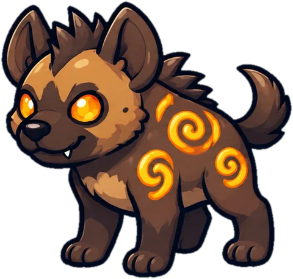

Tap a stage to read its story.
Hyenip is a compact, stocky dark-furred pup with a black coat patterned in glowing amber spiral markings that pulse faintly in the dark. Its large round eyes burn orange, and it carries its thick tail curled up over its haunches. The amber spirals on its flanks seem to spin slowly when it is excited, leaving faint trails in dim light as though writing invisible words on the air. It lurks at the misty edge of ghost hollow, daring visitors with its amber gaze and retreating with a sharp bark-chirr if they step closer.
Field note: The spiral markings on Hyenip's flanks rotate clockwise when happy and counter-clockwise when suspicious - never the same direction twice.
Ghost Hollow. Hyenip and its family are found in the Ghost Hollow. See everyone who lives there.
Share a Bond Food that matches its types to become friends. Hyenip loves:
A Bond Food is not a trick. It joins your spirit with the Kimuro's spirit, and only when it chooses you.
Print the Kimuro adventure packs: mazes, cards, a board game and Bond Mark medals.
See the printable packs